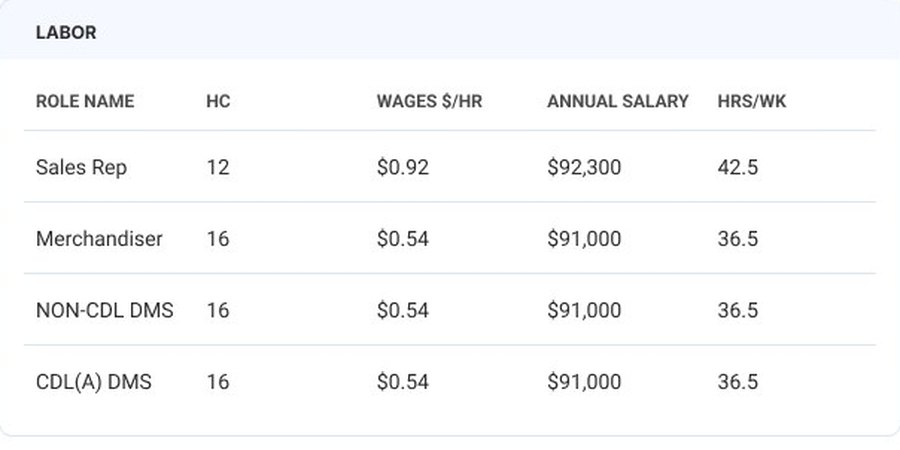
“Almost too aggregated… break it out like delivery, merchandising and sales.”
Labor split by real route roles.
Scoping Pro · PepsiCo × Google Cloud
Planners use it to model PepsiCo’s combined food and beverage delivery network, store by store. Built with Google Cloud and designed to become predictive.
Find margin in how PepsiCo serves every store across North America.
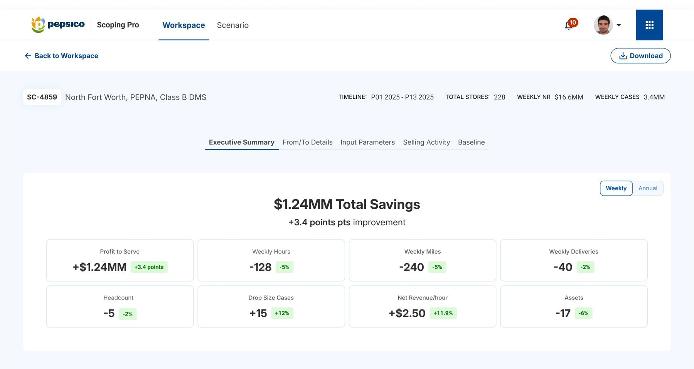
Executive summary
All screens show sample data.
How do we make sure what we build today scales into what this needs to become?
A model needs real runs and trusted numbers before it can recommend anything. So we designed in three steps.
Store-level baseline, routes and P&L impact, with savings as a range.
Finished runs are read-only, so they can be compared and learned from.
Suggested inputs and scenarios, on data built for Google’s AI models.
Five planners and executives tested the sprint prototype in January 2026.
“How do I sense check it? There’s nothing here that tells me I didn’t plan a 24-hour day… It’s pure trust.”
GTM planner, January 2026 research
We added route modeling: trucks per day, hours per route and a map of every route, below.

“Almost too aggregated… break it out like delivery, merchandising and sales.”
Labor split by real route roles.
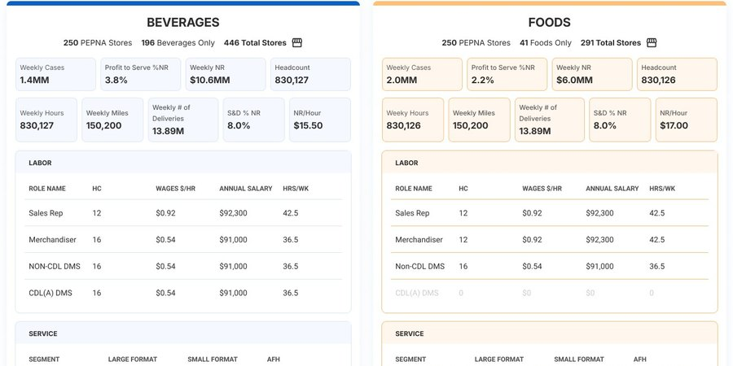
Show snacks and beverages separately.
Beverages and Foods side by side, from baseline to results.
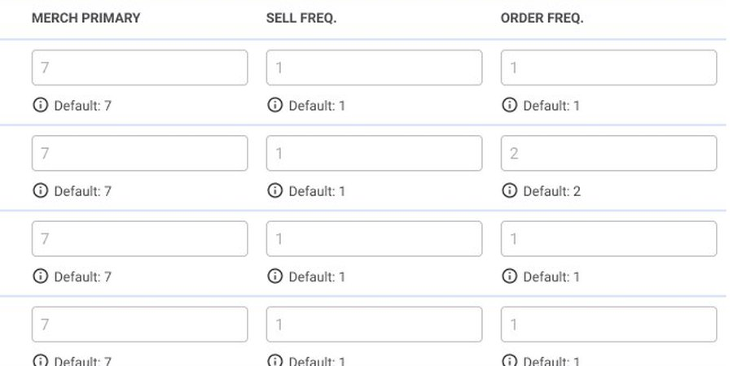
“Having the baseline would be more valuable.”
The default shown under every input.
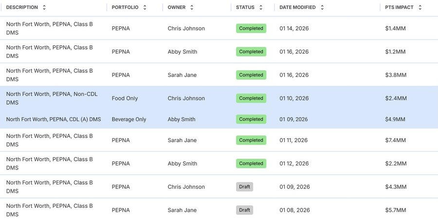
Don’t make me open each scenario to see the result.
Profit-to-serve impact on every scenario in the list.
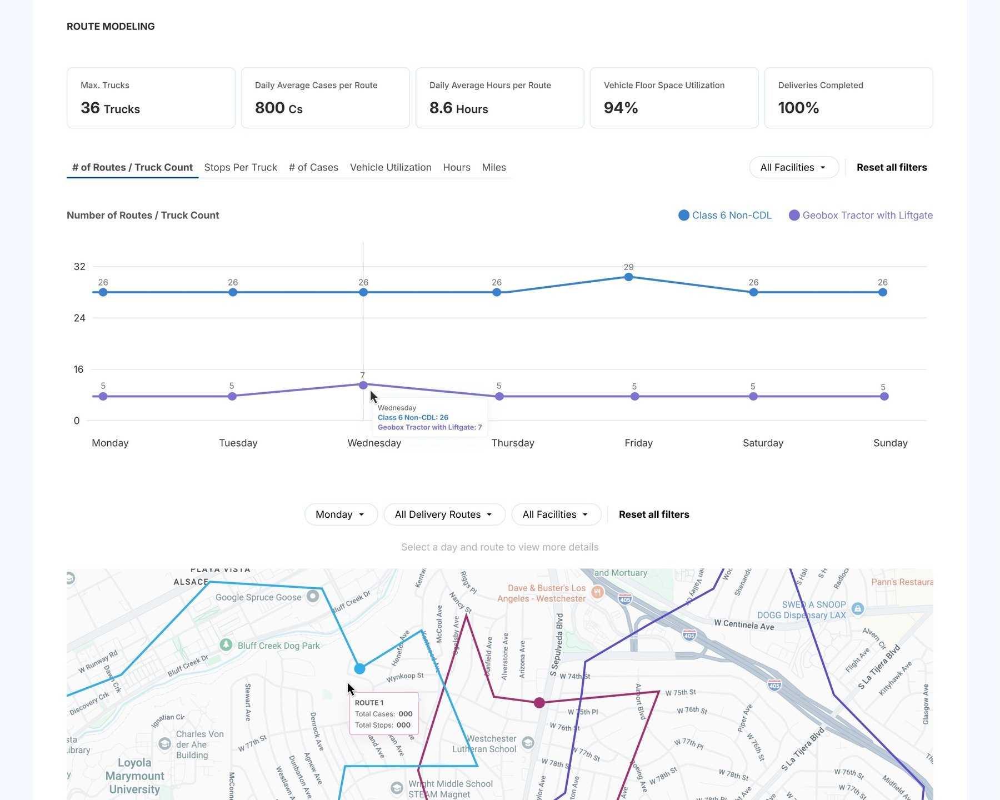
Route modeling
ChoseA transparent simulation where every result traces back to its inputs.
Said no toAI recommendations before the model had real data, though they were the sprint’s most popular ideas.
ChoseRead-only runs. To try something else, planners duplicate.
Said no toEditable results: faster, but a run that can change can’t be compared or learned from.
ChoseResults open on total savings and their sources; the full P&L is one tab away.
Said no toOne dense table for everyone. Research showed the two audiences read results differently.
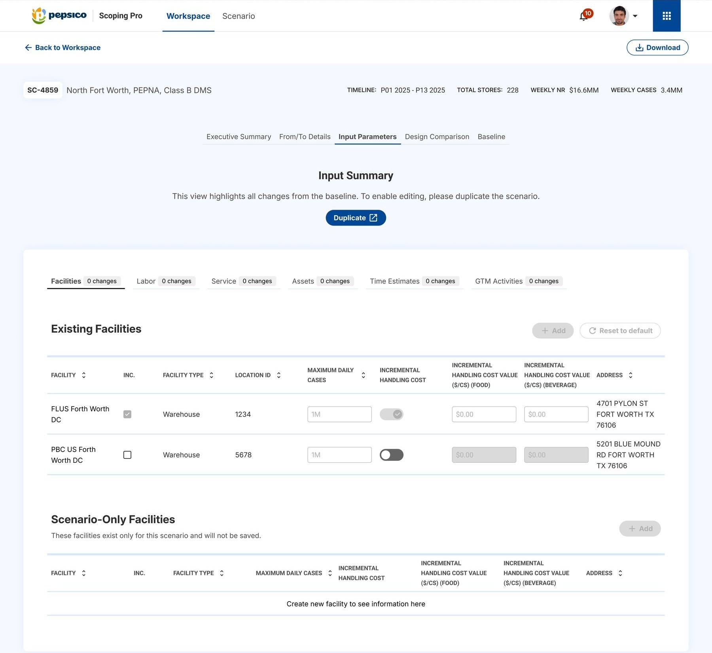
02 · Read-only input summary
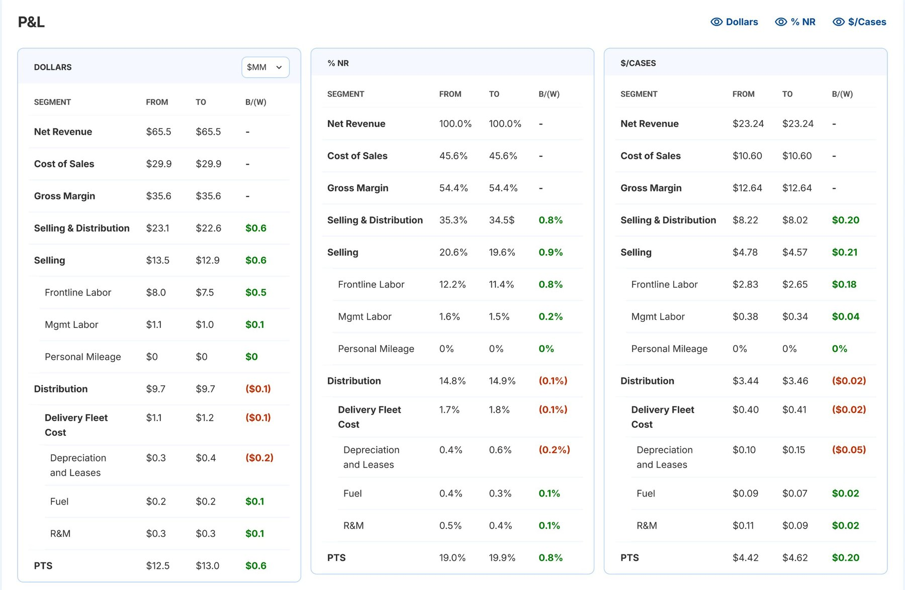
03 · The P&L in Finance’s three views
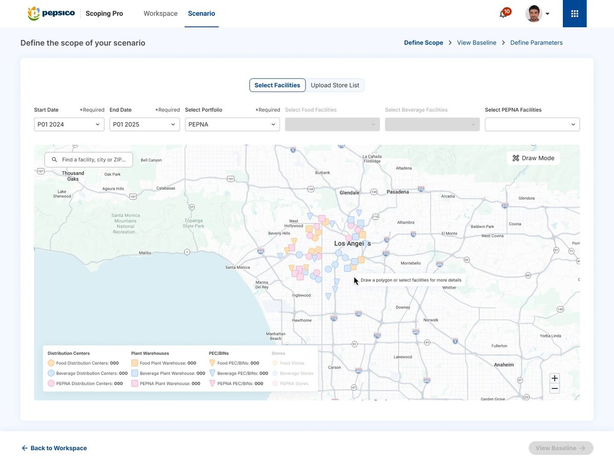
1 · Scope
Pick a territory on the map, or upload a store list.
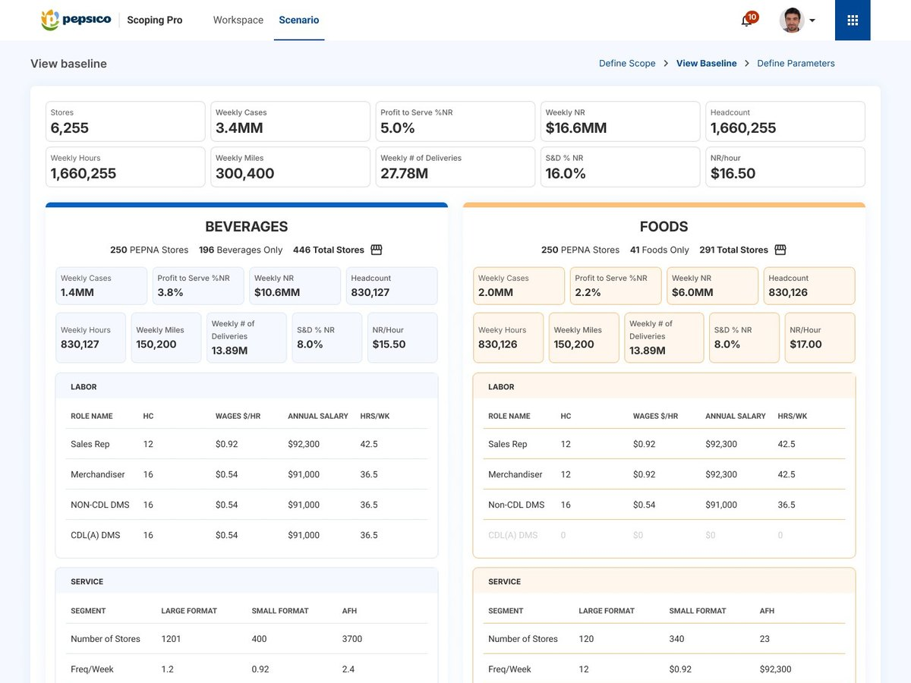
2 · Baseline
Beverages and Foods today, side by side.
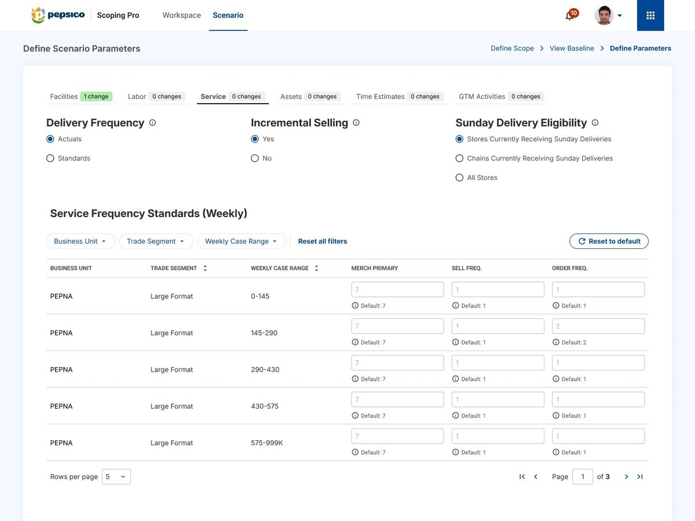
3 · Parameters
Policy choices first, with the default under every input.
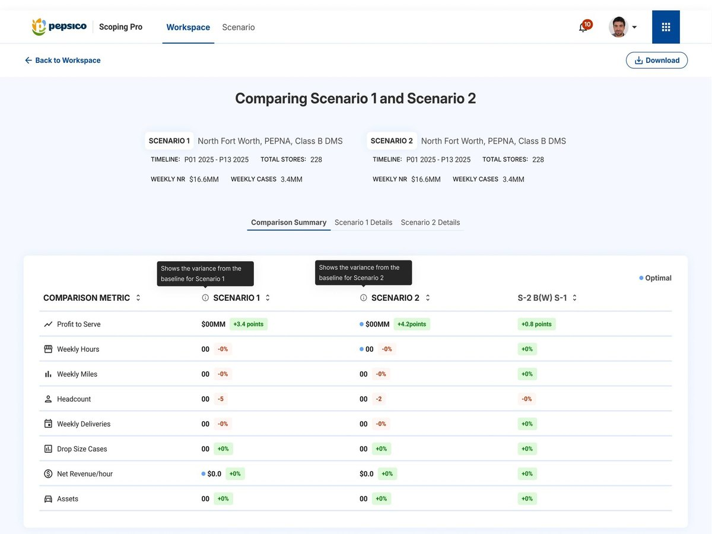
4 · Compare
Two scenarios side by side, each against its own baseline.
~3 days → under 1 hr
Planning time per location. At closeout, formula transparency was credited with removing the “black box” concern and earning trust to scale across North America.
Shipped in Phase 1 and refined in Phases 1.5 and 1.75. Predictive guidance is next.
PepsiCo and Google Cloud worked as one team, with daily critiques and weekly demos across both companies.
A UX designer I co-designed with, a product manager, and the engineers behind the model.
Screen design, PepsiCo’s design system, a coded prototype of the full flow, and two years of knowing these planners.
In an early discussion about how many KPIs to show, I made the case that PepsiCo’s planners aren’t overwhelmed by data-dense screens. A dense screen is fine; showing the data in a complicated way is not.
Raising that early helped us avoid rework before user testing and team share-outs.
This project raised my bar for how much UX can shape a product.
Working alongside Google Cloud’s user-centered team sharpened how I lead. I now start projects by understanding the data, the technical limits and the roadmap, so what we ship today can scale tomorrow.